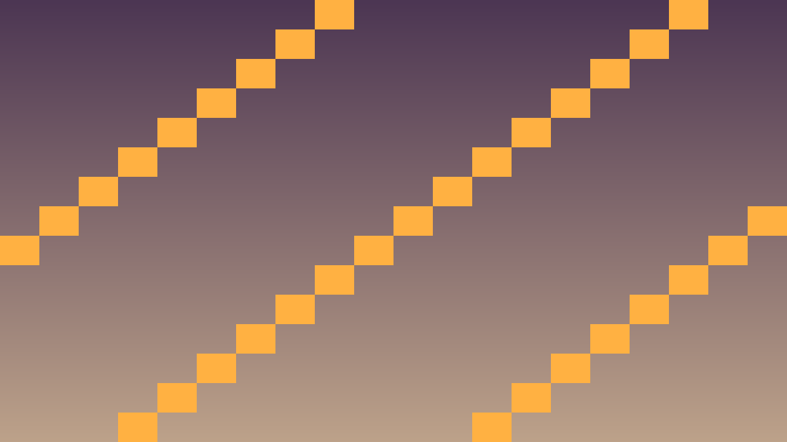
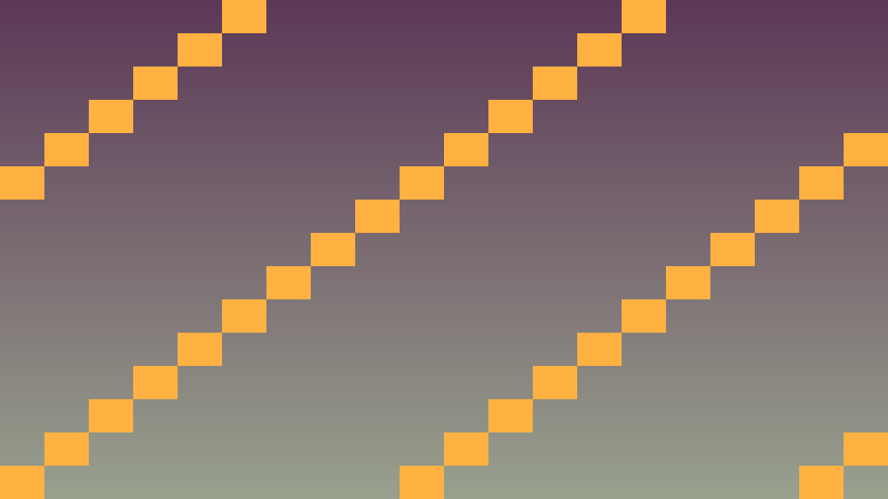

Tavs šīs stundas izaicinājums: Saprast atšķirību starp _process un _physics_process metodēm un izveidot pirmo kustīgu objektu.
Priekšzināšanu robeža: uzdevumos izmanto tikai iepriekš apgūto un šīs lapas teorijas/koda piemēros parādīto. Ja parādās jauna komanda vai rīks, vispirms atrod tās paraugu teorijas blokā.
Godot piedāvā divas galvenās per-frame metodes:
_process(double delta) — izsaukts katrā renderēšanas kadrā (~60 FPS). Lieto vizuāliem efektiem._physics_process(double delta) — fiksēts laiks (60 Hz noklusējumā). Lieto fizikai un kustībām.Delta ir laiks (sekundēs), kas pagājis kopš pēdējā kadra. Reizinot ātrumu ar delta, kustība būs vienmērīga neatkarīgi no FPS.
void Player::_physics_process(double delta) {
// Slikti — bez delta:
// position.x += 5; // ātrums atkarīgs no FPS
// Labi — ar delta:
Vector2 pos = get_position();
pos.x += 200.0f * delta; // 200 pikseļi/sekundē
set_position(pos);
}Kritiskais fokuss: šajā stundā nepietiek tikai panākt redzamu efektu editorā. Jāspēj paskaidrot, kura C++ klase glabā stāvokli, kura metode to maina un kā Godot node struktūra šo kodu izmanto.
Pārbaudes pierādījums: spēlētājs, objekti un sadursmes darbojas ar C++ klasēm, kas lieto _physics_process, Input, CharacterBody2D, Area2D vai move_and_slide.
#include <godot_cpp/variant/string.hpp>
using namespace godot;
struct PhysicsCheckpoint {
String lesson = "2.1 Process un fizikas cikli";
bool uses_cpp = true;
bool uses_physics_process = true;
bool uses_delta_time = true;
bool checks_collisions = true;
};Atpazīsti šīs stundas galveno ideju un sasaisti to ar gala projektu Platformas spēle.
.hpp, .cpp vai Godot scēnas failā, nevis uzreiz lielu funkciju.klases_punkti, zvana_taimeris, pazudusais_markieris vai kafijas_pauze; mazliet humora drīkst, bet kodam jāpaliek skaidram.Izmanto šīs stundas prasmi nelielā, strādājošā projekta daļā.
.hpp, .cpp vai Godot scēnas failā, izmantojot teorijas piemēru kā sākumpunktu.Pārbaudi risinājumu, salīdzini rezultātus un atrodi, ko uzlabot.
Pievieno nelielu radošu uzlabojumu ar klases dzīves piemēru, nepārsniedzot apgūto vielu.


#include "mover.hpp"
#include <godot_cpp/core/class_db.hpp>
#include <godot_cpp/variant/utility_functions.hpp>
using namespace godot;
void Mover::_bind_methods() {}
void Mover::_physics_process(double delta) {
Vector2 pos = get_position();
pos += velocity * delta;
if (pos.x < 0 || pos.x > 1280) velocity.x = -velocity.x;
if (pos.y < 0 || pos.y > 720) velocity.y = -velocity.y;
set_position(pos);
}